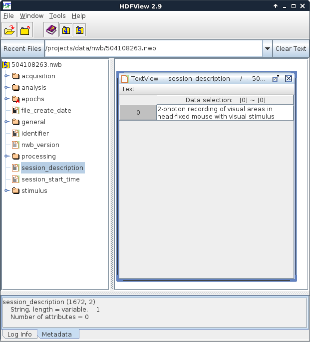
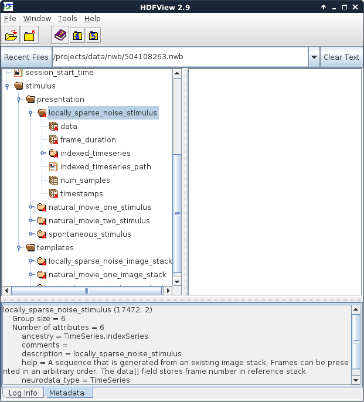
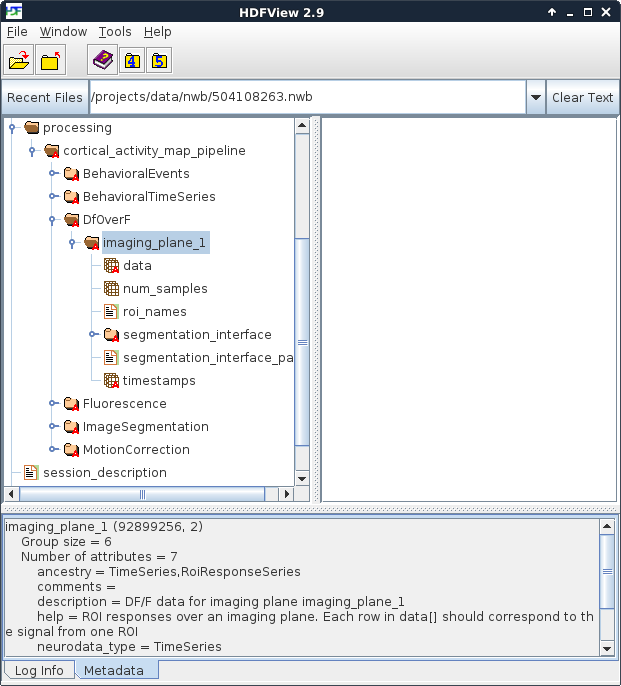

Organization of a Brain Observatory NWB file¶
The Allen Institute’s Brain Observatory data sets include data from 2-photon microscope recordings including image segmentation, motion correction and fluorescence traces. It also includes information about the visual stimuli presented during the recording. This information is packaged in the NWB format. Here is a brief description how the data is stored in the NWB file.
Browsing the file¶
The NWB format is a self-documenting file format that is designed to store a wide range of neurophysiology data. Structurally, NWB is nothing more than an HDF5 file that has data organized in a particular way. For example, the format has a dedicated location for storing all data that is acquired during an experiment, and another place to store stimulus data that was presented. Data is usually stored in a time series, and each time series has information to document the type of data that it stores. Importantly, all HDF5 tools and libraries are able to read the NWB file.
When using NWB files, the most important tool to become familiar with is HDFView. HDFView is an open-source tool that is published by the HDF Group. It allows you to browse the contents of an HDF5 (and NWB) file in an intuitive way, and also to view some of the data stored within it. HDFView can be downloaded at www.hdfgroup.org. It is highly recommended that anyone using an NWB file download and install this tool.
NWB file organization¶
Each NWB file is organized into six sections. These sections store acquired data (‘acquisition’), stimulus data (‘stimulus’), general metadata about the experiment (‘general’), experiment organization (‘epochs’), processed data (‘processing’) and a free-form area for storing analysis data (‘analysis’).

Figure 1. An NWB file, viewed in HDFView¶
At the left of HDFView shows the organization of data in an NWB file. It is most useful to imagine an HDF5 file as a container that stores many files and folders within it. Because of this structure, you can browse an HDF5 file, and an NWB file, in the same way that you browse the files and folders on your computer. Folders can be opened by double-clicking on the folder icon. The contents of a ‘file’ within HDF5, which called a dataset, can be seen by double-clicking it. An NWB file has six top-level folders and five top-level datasets. In Figure 1, the contents of the ‘session_description’ dataset is displayed. An NWB file is designed to store data from a single experimental session in a single animal. The session_description dataset provides a quick summary of the information available in the file. The NWB specification, describing the format and how data is stored, can be downloaded here.
Stimulus data¶
Within an NWB file, stimulus data is organized into ‘templates’, which are stimulus descriptions that can be used one or more times, and ‘presentation’, which stores the time-series data about what was presented and when.

Figure 2. Stimuli presented during the experiment¶
In this experiment shown in Figure 2, there were four stimuli – one locally sparse noise, two movies and one neutral stimulus for observing spontaneous activity. When browsing the file, note the panel at the bottom. Clicking on a folder or dataset will cause information about that object to be displayed there. This information can include the type of data stored, the unit that stored in, as well as comments and/or other metadata.
Processing¶
In the NWB file, the processing folder is designed to store the contents the different levels of intermediate processing of data that are necessary to convert raw data into something that can be used for scientific analysis. In the Allen Institute’s NWB file, these levels of processing include motion correction of the acquired 2-photon move frames, image segmentation into regions of interest, the fluorescence signal for each of these regions, and the dF/F signal that is useful for correlating cell activity with presented stimuli.

Figure 3. Location of dF/F data¶
HDFView provides a very efficient way to browse the contents of an NWB file.
Organization of data¶
This data release was based on three different sets of stimuli, name ‘A’, ‘B’ and ‘C’.
Stimulus A included:
Drifting grating (30 minutes over 3 intervals)
Natural movie (20 minutes over 2 intervals)
Natural movie (5 minutes in 1 interval)
Spontaneous activity (5 minutes in 1 interval)
This was presented as: (1) (2) (3) (1) (2) (4) (1) (2)
Stimulus B included:
Static gratings (25 minutes over 3 intervals)
Natural images (25 minutes over 3 intervals)
Natural movie (5 minutes in 1 interval)
Spontaneous activity (5 minutes in 1 interval)
This was presented as: (1) (2) (4) (2) (1) (3) (1) (2)
Stimulus C included:
Locally sparse noise (37 minutes over 3 intervals)
Natural movie (5 minutes over 1 interval)
Natural movie (5 minutes over 1 interval)
Spontaneous activity (10 minutes over 2 intervals)
This was presented as: (1) (4) (2) (1) (3) (4) (1)
Below is a brief description and location for several types of data in the NWB file.
Category |
Data |
Location |
SDK function(s) |
|---|---|---|---|
Metadata |
Cre line |
/general/subject/genotype |
|
Imaging depth |
/general/optophysiology/imaging_plane_1/imaging_depth |
||
Target structure |
/general/targeted_structure |
||
Stimulus session |
/general/session_type |
||
Stimulus |
Locally sparse noise |
/stimulus/presentation/locally_sparse_noise_stimulus |
|
Natural movie (1) |
/stimulus/presentation/natural_movie_one_stimulus |
|
|
Natural movie (2) |
/stimulus/presentation/natural_movie_two_stimulus |
||
Gray-screen |
/stimulus/presentation/spontaneous_stimulus |
|
|
Processed data |
Motion correction |
/processing/visual_coding_pipeline/MotionCorrection |
|
Image segmentation |
/processing/visual_coding_pipeline/ImageSegmentation |
|
|
Fluorescence |
/processing/visual_coding_pipeline/Fluorescence |
|
|
dF/F |
/processing/visual_coding_pipeline/DfOverF |
|